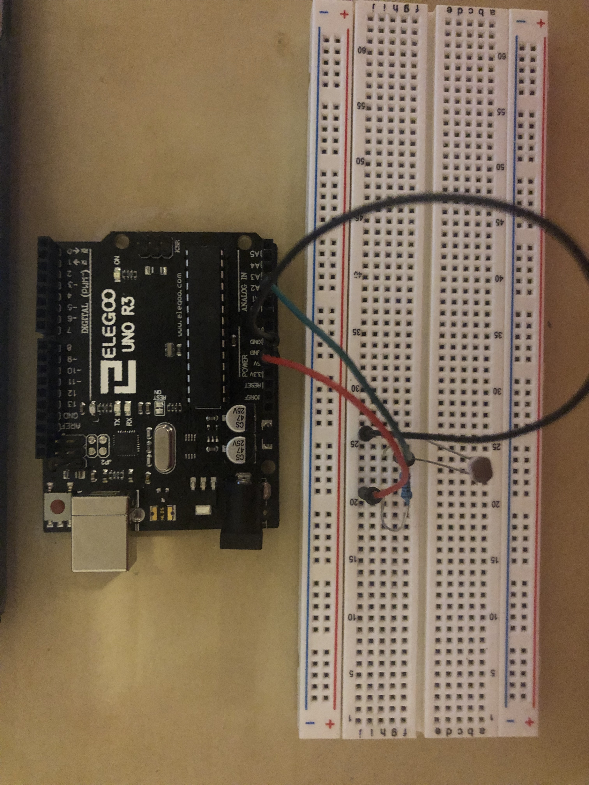

Assignment 6: Datalogging!
Sahana Vishwanath
This page shows all the documentation for assignment 6.
The following picture shows the schematic for this assignment:
This schematic uses one photoresistor. The resistor I used was a 10k ohm resistor to prevent short circuiting.
The following picture shows the circuit for this assignment:

The following code shows the firmware for this assignment:
// analog input pin that the photoresistor is attached to
const int analogInPin = A1;
// value read from the photoresistor
int sensorValue = 0;
void setup() {
// initialize serial communications at 9600 bps
Serial.begin(9600);
// set analogInPin A0 as an input
pinMode(analogInPin, INPUT);
}
void loop() {
// read the analog in sensorValue
sensorValue = analogRead(analogInPin);
// print 'The sensor value is ' to the serial monitor
Serial.print("The sensor value is ");
// print the sensorValue to the serial monitor
Serial.println(sensorValue);
}
The comments in the above code describe each line of in the above code in detail. The code initializes various variables as well as sets certain output and input pins. The code then reads the sensor to the analog, and prints the sensor value to the serial monitor.
The following gif shows the operation of the circuit for this assignment:

The gif above shows how the circuit operates.